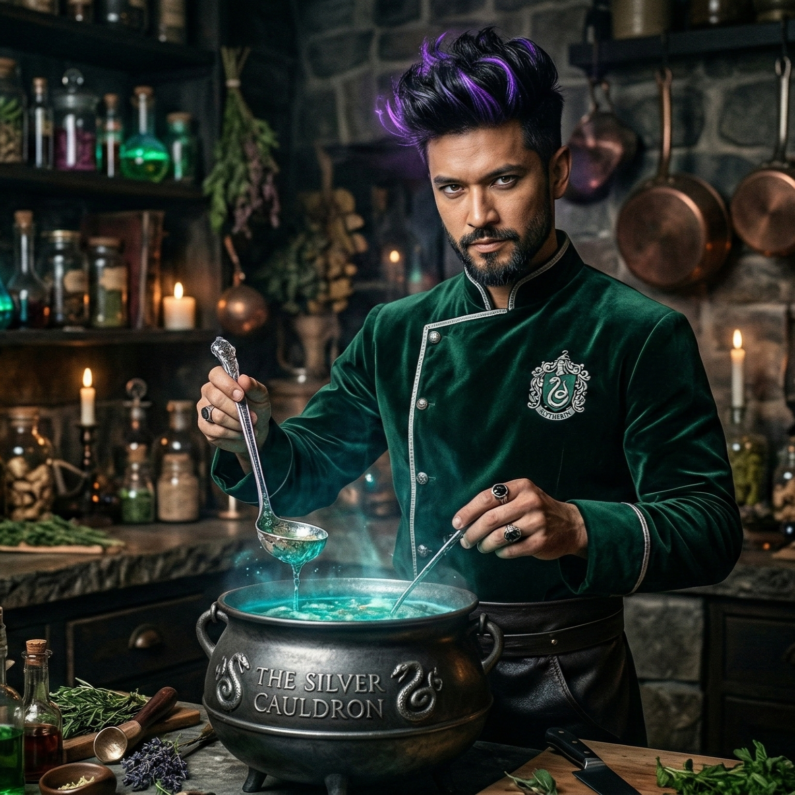

O Alquimista
Magnus Riddle
Magnus não é apenas um cozinheiro; ele é um estudioso das propriedades mágicas da matéria. Formado com honras em Alquimia Superior, ele dedicou décadas para entender como as emoções humanas podem ser alteradas através do paladar. No Caldeirão de Prata, ele opera sua cozinha como um laboratório sagrado.

Filosofia Gastronômica
"A perfeição não aceita pressa. Um ingrediente colhido sob a lua errada pode arruinar uma vida de trabalho." Magnus acredita na sazonalidade mágica e no respeito aos elementos. Sua cozinha é silenciosa, precisa e absoluta.
Especialidade: Infusões
Mestre em extrair a essência pura de ervas extintas e flores raras das montanhas da Escócia.
Prêmio Alquimia
Vencedor por três anos consecutivos do Caldeirão de Ouro pela Sociedade Alquímica Internacional.